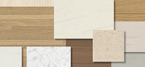

ORGANIC
오가닉
러프한 소재와 함께 자연 속의 공간을 풍부하게 경험할 수 있는 오가닉한 스타일


내추럴 컨셉을 표방하는 오가닉 네이처는 예스럽지만 세련된 느낌의 공간으로 중년층의 라이프 스타일과 취향을 반영한 스타일입니다. 전체적으로 밝은 아이보리와 베이지, 브라운 컬러를 사용하여 생활에 지친 사람들에게 쉼과 힐링을 제공하는 인테리어입니다.
- 자연 친화적인 공간 연출
- 자재: 티크나 월넛 수종의 바닥재, 텍스처가 살아있는 벽지, 나뭇결의 거친 느낌을 강조한 도어
- 소품: 자연소재 그대로의 스툴, 나뭇가지 형태의 플로어램프, 한국적 저어의 툇마루 공간, 모던하게 재해석한 사방탁자
- 책임디자이너
김미화 


물질적인 풍요를 바라기 보다 현재 상황에 만족하고 감사함을 가지고 소외된 계층에 관심을 가지고 더불어 잘사는 사회를 만들기 위해 작은 금액이라도 나눔을 실천하려고 노력합니다. 그린라이프 스타일의 사람들은 자연의 느낌을 좋아하지만 그렇다고 도시에서 멀리 떨어진 곳에서 살려고 하지는 않습니다. 대신 자연의 아름다움을 담은 주거 공간에서의 삶을 살고자 합니다.

-

Keyword 오가닉키워드

-

ImageMap 오가닉이미지맵
-

Material Photo 오가닉마감재